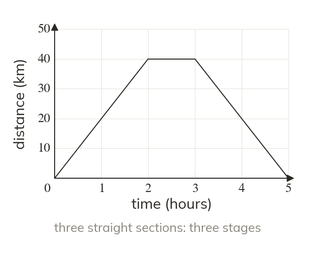
What the axes say
A distance-time graph plots distance from the start against time. Each straight section is one stage of a journey at a steady speed.
A distance-time graph tells the story of a journey: where someone went, when they stopped and how fast they moved. Each straight stage is a direct proportion, and its steepness is the speed.
Work down the page at your own pace. Write every answer in your book first, then click to check it.
Read each card, then follow the worked examples one step at a time.

A distance-time graph plots distance from the start against time. Each straight section is one stage of a journey at a steady speed.
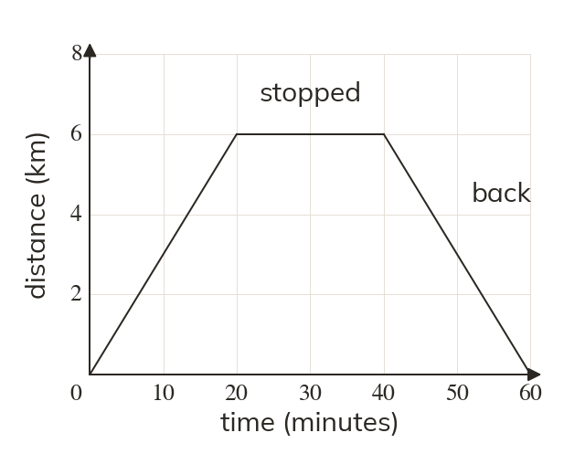
A horizontal section means stationary: time passes, but distance does not change. A section back down to zero is a return to the start.
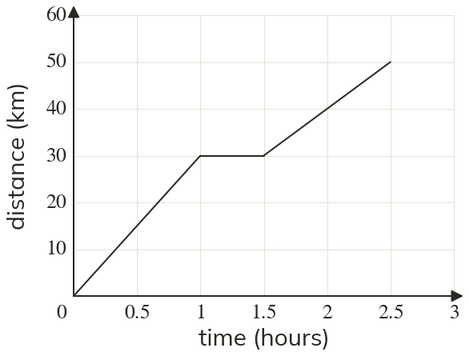

Pick an answer. If it's wrong, the feedback tells you which mistake it was.
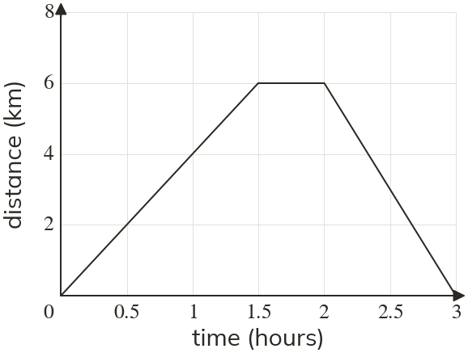
Printable worksheet — the questions with room to work.
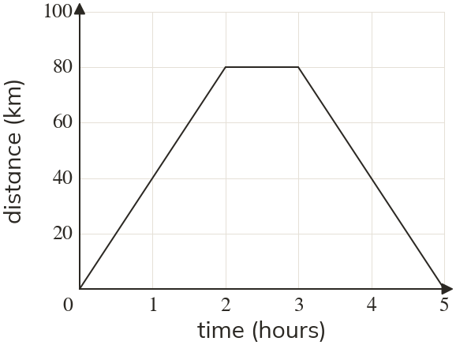
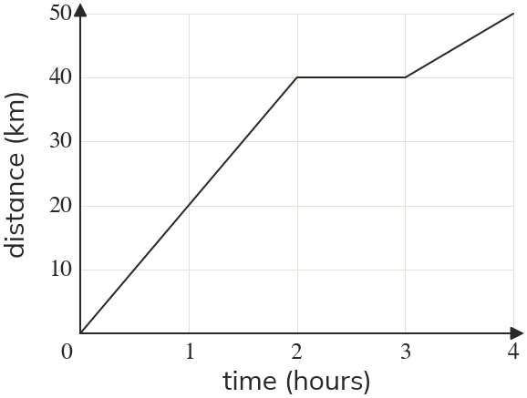
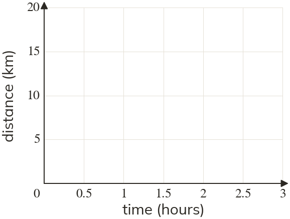
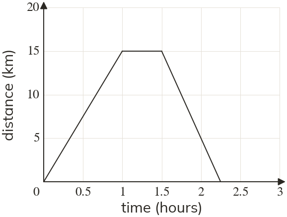
Read each card, then follow the worked examples one step at a time.
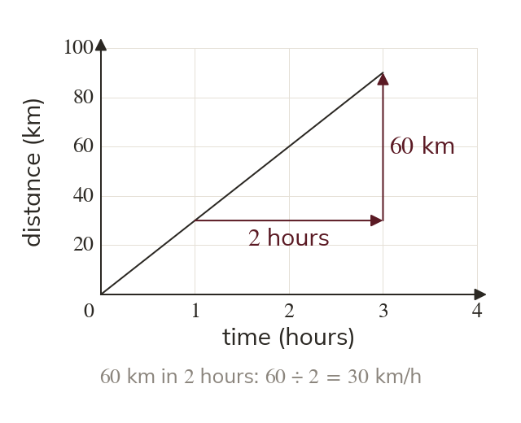
The gradient of a distance-time graph is distance divided by time, which is the speed. Its unit comes from the axes: km and hours give km/h.
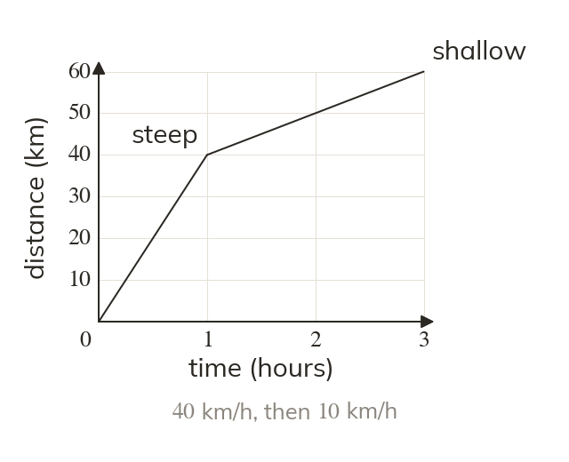
A straight stage keeps one speed, like a direct proportion's multiplier. Steeper means faster, and a flat stage means a speed of zero.
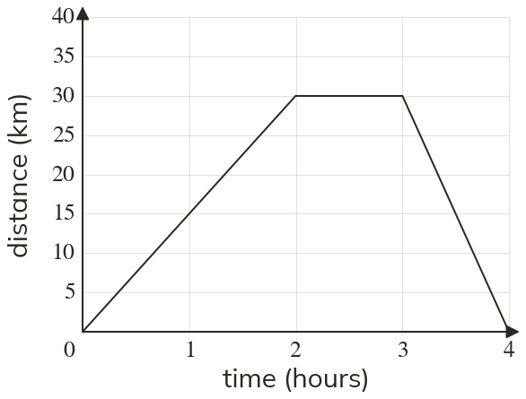
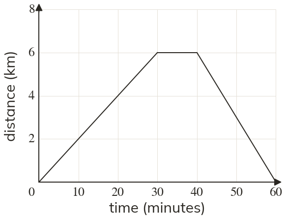
Pick an answer. If it's wrong, the feedback tells you which mistake it was.
Printable worksheet — the questions with room to work.
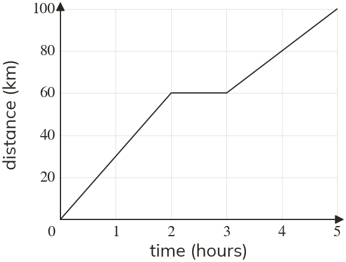
Finished? Next lesson: 10.23.1 Bar Charts and Pictograms.
For each skill, tap the one that is true for you today. Your Revise pages start with anything you mark Not yet.
Your ratings are saved on this device only.
Log in, then search for a code to practise that skill.
Videos, worksheets and more on each part of this lesson.